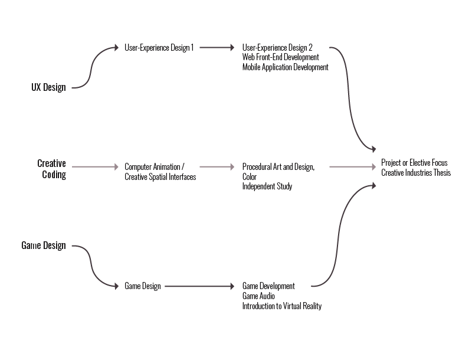

ATLS 5420
Final Project
Project Deliverables & Point Value:
Here is a list of all of my deliverables for this project, with descriptions, for a grand total of 106 points.
- Web Portfolio (30pts+)
For this portfolio, I started with a template. I very quickly re-did that entire template from scratch and took the slideshow from Neill (thank you). The content is still being developed, but the core skeleton is there!
I estimate that I've put in over 100 hours into this and it is nowhere near complete. I've focused on making it responsive and modular. I am currently working on design, content and adding more interactive elements. Since I started completely from scratch, I argue I could get the total points (or more!).
GitHub, Atom > HTML, CSS, JS
- Program Roadmap (4-7pts)
- Focus Elective Plan
- Priority Interests Ladder
Proposed based on the concept mention in class, I've created my “ladder”, prioritizing my interests in this program. This was an exercise to help further guide my roadmap.
Illustrator
- Final Write-Up (15pts)
- Self-Branding (11-14pts)
- Resume/CV
- Custom Letterhead
- Cover Letter Template
- Networking Email Template
I put all of this under "Self-Branding" because it is contains a consistent template (created by myself). That way there is a level of consistency with my communications with potential employers.
InDesign, Illustrator
- Job Postings (10pts)
- Curation of Resume/CV (2pts)
A proposed part of my project, I wanted to further my self-branding dive and find consistent ways to curate my resume content based on job position. Future Note: I want to make this an interactive resume on my portfolio that has this curation as a built-in funcitonality.
- Generative Code Thank Yous (2-5pts)
I had fun making something creative and unique as a Thank You. I used the previous self-branding template to help maintain consistency.
Atom > JS
- LinkedIn Update (2-5pts)
My LinkedIn has been inactive for the majority of the time that I've had it (which is not long). My update did not include all 30 of the required connections; however, I did start connecting with my peers in the CTD program. Additionally, I updated my status from "Unemployed" to the appropriate status. I am going to update it with my portfolio and my interest in interships soon.
I have identified, but not yet reached out to, some of the speakers that we had throughout the semester. These include: Jillian Berger, Annie Margaret, Justin Gitlin, Megan Friesth, Heather Underwood, Dick Dickey and Billy Griffin.
- Book of Choice (5pts)
I am still in the process of reading this book, which is why I don't have the full points listed!
- Self-Care Inventory & Plan (10pts)
I have adjusted the original design of this item to fit my own needs!
- Extra Activities: Skills Developed (2-5pts)
I argue that the creation of this portfolio, along with many of the deliverables, has significantly impacted my "Toolbox". My technical skills in many tools (some listed with each item) have grown exponentially over the course of this project. For that reason alone, I am including this deliverable.
Future Portfolio Updates:
- Condense & clean styling css
- Accessibility, including titles for readers
- Include more animation & interactivity
- Include more creative coding
- More structured and thorough documentation of works
- More "voice" and character in design
- Include written articles (which I did not have time to include)
- Make work section a grid
- Logo?
Learning Objectives:
- Prototyping with Figma (migrate from XD)
- Animations with After Effects
- 3D Models with Blender, ZBrush
- Image Editing with GIMP / Photoshop
Program Roadmap
Focus Elective Plan
This is the general curriculum for the MS-CTD Track:
- Year One (Fall): Profoessional Seminar: Business of Creativity, Design Methods, Creative Code
- Year One (Spring): Design Studio, Creative Technologies, Elective (Tech Focus)
- Year Two (Fall): Elective (Critical Perspectives or Tech Focus), Elective (Critical Perspectives or Tech Focus), Elective (Tech Focus)
- Year Two (Spring): Project Focus (Design Studio) or Elective (Tech Focus), Creative Industries Thesis Project
The following plans are based on my priority ladder and courses offered in previous semesters via the CU Class Search tool. 
If I continue to pursue UX Design, these are some of the people I need to have on my advisory team: Kevin Cook and Jillian Berger (if possible). My electives could be the following:
- Year One (Spring): User-Experience Design 1
- Year Two (Fall): Web Front-End Development, Mobile Application Development, User-Experience Design 2
- Year Two (Spring): Project Focus (Design Studio) or Elective (Tech Focus), Creative Industries Thesis Project
Optional Electives: Mobile Application Development (Advanced Topics), Aesthetics in Design, Computer Animation
If I choose a creative coding pathway, these are some of the people I need to have on my advisory team: Justin Gitlin, Amy Banic and Megan Friesth (if possible). My electives could be the following:
- Year One (Spring): Computer Animation or Creative Spatial Interfaces
- Year Two (Fall): Procedural Art and Design, Color, Independent Study (possibly with Justin)
- Year Two (Spring): Project Focus (Design Studio) or Elective (Tech Focus), Creative Industries Thesis Project
Optional Electives: Big Data Architecture, Crafting Experiences, Computer Animation, Aesthetics in Design
If I choose to pursue Game Design, these are some of the people I need to have on my advisory team: M. Bethancourt and D. Rankin, from the Whaaat?! Lab. My electives could be the following:
- Year One (Spring): Game Design
- Year Two (Fall): Game Audio, Introduction to Virtual Reality, Game Development
- Year Two (Spring): Project Focus (Design Studio) or Elective (Tech Focus), Creative Industries Thesis Project
Optional Electives: Tiny Games, Games as Culture, Aesthetics in Design, Crafting Experiences
I am very interested in speaking with Annie Margaret, regardless of pathway. Further electives that support Educational Design + Technology:
- Spring: Empathy in Technology, Knowing and Learning in Mathematics and Science (EDUC 5050), Issues and Methods in Cognitive Science (EDUC 6504), Human Learning (EDUC 8358, prereq 6318)
- Fall: Neurohacking, Critical Technical Practice, Knowing and Learning in Mathematics and Science (EDUC 5050), Perspectives on Mathematics (EDUC 5317), Psychological Foundations of Education (EDUC 6318)
Many of the electives will depend on the first week of classes, when I determine which ones I am most interested in and fit best with my ladder. I really wish there was a way to take more per semester, but I realize that is more time and expense!
Priority Interests Ladder
Based on courses in the program I've taken thus far and the speakers in this class, I've identified the following priority ladder which should help drive my elective decisions:
- Educational Design + Technology
- UX/UI Design
- Game Design
- Creative Coding
Ideally, it would be my goal to combine two or more of these areas into a single job position! I believe that Educational Design could easily pair with any of the following interests, which is why it is listed at the top.
Final Write Up
- What career goal(s) did you have coming into the course? How, if at all has that changed? Which speakers influenced you and how?
My initial career goal at the beginning of this course was the path toward becoming a UI/UX Lead. This would involve starting as a UX Designer and acquiring expertise in the industry. Occasionally, people can obtain a management position without this experience; however, the majority of positions I've seen, as well as my personal goals, align with at least 3-5 years of experience working within a team before managing one.
Throughout this course, we've heard from many speakers in many different fields and there were a few that really caught my attention. The first was Justin Gitlin, a creative coder and musician (to name only two of his many titles). Intially, I didn't realize that such a job existed and my dive into coding in his class has made me gain significant interest in this topic. However, it appears that much of that work would be contractual and I would be working as an independent artist. That would be a challenge for me to start directly after this program, but not impossible.
The next speaker that I really enjoyed was Jillian Berger. I wasn't particular interested in becoming a UX Researcher (although, working with people and empathizing is something I do enjoy). However, her method of managing and creating a team was very helpful. If I were to manage a team, I would want her as a resource when I first start out.
After that, there was a long pause. I heard many different perspectives and stories, which were helpful in forming my own opinions on where and what my work day might look like.
The next speaker that I really related to was Megan Friesth. Her discovery of a position that allowed her to cover all of her passions was inspiring. It was especially motivating to hear from someone who is passionate about education and who is using her creative tools to make that reality. If I could find a similar role, even within a more direct educational company, that would be ideal. Leading a team within that realm could be an ultimate goal.
The final speaker that I connected with was Billy Griffin. Not only did I agree with his "growth mindset" and positive attitude toward change (and risk), but I also really enjoyed hearing his story of finding the position he is in. It was a long and twisting journey, and I fully expect mine to be similar. I don't expect that I will fall into the perfect position right away, but I do hope that it doesn't take too long.
Ultimately, I believe that my career goals have branched to the possibility of creative coding and educational design (which would likely fall into the category of UX). Ideally, I would like to combine all of them, like Megan, and find a position that allows me to overlap education, creative coding and design. Eventually, building and managing a team under that umbrella!
- What has this course helped you recognize that you’ll need to do to prepare for this career and how specifically will you need to do that (e.g. raise capital, make a business plan, add to your education, etc.)?
There are three things that I've realized (or that the course has reinforced): 1) I need to build up my technical "toolbox" with relevant tools for future careers, 2) I need to build up a relevant portfolio to showcase work that I want to do, and 3) if I am unable to find a position that fits all of my passions, I can paved my own path - I need business knowledge and experience. I do believe that the opprtunity to do all of these things lies within the program and I just need to pursue them as fervently as possible.
- What kind of environment do you see yourself fitting into best and why?
I am strongly drawn toward a smaller, more intimate environment. Whether it is a startup, a small business, or a business I begin on my own, I think that I would feel "silo'd" or otherwise unable to maintain my core requirements: keeping a broad range of skills, continuously learning new skills, working on a variety of projects, and having the flexibility to change hats. I am a bit chaotic in how I work, jumping between tasks often, and I don't believe that my style of work or values would easily fit within a larger company setting.
- What, if any, feedback do you have for us on the class? Biggest takeaways from the course, etc.
Feedback will be given in the submission of this Final Project on Canvas, because I believe in the importance privacy!
Self-Branding
For my self-branding, I decided to focus on making my communications consistent. So, I re-designed my old resume to match the style of my portfolio (and vice versa). The templates are set up for my to fill the content will relevant information - things that are in ALL CAPS are areas I would want to change per person.
You can download the pdf of all of the following images here: Download PDF
Job Postings
Identify job postings for at least 5 jobs similar to the ones you’d be applying for. Please make this a mix of jobs you might apply for in the near future (right out of school) versus those you’d aspirationally apply for later in your career (think 5 or 10 years for now). An example of this is that you may look for postings for a junior producer now, a senior producer in 5 years, and a creative director in 10. What qualifications or skills are you missing? How can you get those? What might you do to set yourself apart and what would your plan to do that be? As you pull job postings, also keep in mind what kind of company you want to work for and how that may change over time (e.g. start out somewhere big, move into something small, etc.). Please reference or link to any articles you’ve read on the future of the creative freelance market. How are you preparing for this?
Generative Code Thank Yous
Use the run/stop buttons to run the code! Click the canvas to have it re-paint over the original, creating more color.
This can either be embedded (as shown) or can be saved as an image to include as an attachment or within a document. My idea is to expand this concept to a page on this site, allowing the individual a more personalized experience that includes interaction and animation.
Below are some examples of previously generated images with a slightly different layout:
Book of Choice: Storytelling for User Experience
The book I choose is Storytelling for User Experience: Crafting Stories for Better Design by Whitney Quesenbery and Kevin Brooks. Thus far, the book is focused on how to use a user narrative - I'm hoping that the book will reach into general methods that I could use for myself, as well. However, I believe it will be helpful in presenting and helping my audience connect with my work. Additionally, the book is filled with more resources on each topic.
The overall theme is how you can use stories to help in the design process. Either to describe the context of the design, explaining why a new design is needed, or simply exploring a new design. It is used, instead of pure logic, to engage the audience and help them interact with the concept.
It is first important to recognize and acknowledge that every party is part of the story. It isn't that you are talking at the audience, but that the story exists in the minds of the listeners, as well. Knowing that the listeners will translate to their knowledge and frame of reference is key to developing an well-understood story. Then you canuse the story to persuade, explain, create mutual understanding, or spark more ideas.
I found it important to note that new ideas can come from anywhere. With a well crafted story, great ideas can come from places you would never expect!
The storytelling process starts with listening - it is important that everyone on the team can listen before they start adding to the narrative. It takes practice and effort to become an active listener. In some cases, companies have trained everyone on the team and in the building on how to actively listen.
Once you've heard the story, it is important the story is told accurately and authentically, while clearly tailoring the narrative to your audience. This can run into ethical issues of what to include and keeping the voice of the user (there are many ethics codes out there to help guide a new UX designer). If done well, the strength of stories is that they provide a more easily understood reason for the design, surpassing the power of pure logic.
Some suggestions the book gave is to make sure the story reflects real life (the life of the user), without your influence or bias. Avoid suggestive or emotional terminology, leading questions, suggesting issues, or translating to your frame of reference.
However, stories should not be a verbatim recount of what the user said. The story needs to be understandable by your audience, yet still retain the original meaning. Your audience is part of the story, so they need to interact and journey through the story with you. The end or resolution of the story is a key moment in how your audeince will receive it. It needs to be a safe ending, without being suggestive to how they should feel, and allowing them to fully process what they've experienced.
It was interesting to me the emphasis the book put on the end of a story. The audience cannot be led to a certain emotional response, but allowed to process it. It touches on the ethics of persuasion and how it is a fine line to walk. It is an art to persuade without leading or telling people how to feel.
Storytelling can and should be used throughout the design process, such as when you are: collecting user input, conducting user research, ideating new designs, testing or selling your design. One of the key roles in storytelling is realigning a project to a goal, especially when there are many ideas and designs being discussed.
...
I am about halfway through, but will continue to add to this article!